Alison Booth
Bacon, David Francis, ed. Memoirs of Eminently Pious Women of Britain and America. New Haven: D. McLeod, 1833.
Evident reference to Gibbons and later editions by Jerment, Burder, and others 1777-1836.
TOC: Lady Jane Grey; Queen Catharine Parr; Countess of Warwick; Lady Elizabeth Brooke; Lady Alice Lucy; Lady Frances Hobart; Viscountess Falkland; Mrs. Lucy Hutchinson; Mrs. Catharine Clark; Countess of Carbery; Lady Rachel Russell; Mrs. Elizabeth Bury; Queen Mary II; Mrs. Elizabeth Burnet; Mrs. Elizabeth Rowe; Countess of Seafield; Elizabeth West; Lady Elizabeth Hastings; Countess of Huntingdon; Lady Ann Agnes Erskine; Viscountess Glenorchy; Lady Henrietta Hope; Mrs. Sarah Edwards; Mrs. Sarah Osborn; Miss Susanna Anthony; Mrs. Martha Laurens Ramsay; Mrs. Isabella Graham; Mrs Harriet Newell; Miss Fanny Woodbury; Mrs. Susan Huntington; Miss Caroline Elizabeth Smelt; Mrs. Susan Poor; Mrs. Elizabeth Dolson; Mrs. Sally Agard; Miss Elizabeth Peck; Miss Lydia B. Leavitt; Miss Elizabeth Hough; Mrs. Sally Rundal; Miss Catharine Brown; Tahneh; Mrs. Jane Clark; Mrs. Elizabeth Bishop; Mrs. Ann Hasseltine Judson; Mrs. Esther Butler; Eliza; Mrs. Myra W. Allen; Miss Hannah Adams.
-
 Lady Jane Grey
Lady Jane Grey -
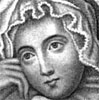Lady Rachel Russell
-
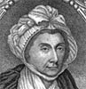Countess of Huntingdon
-
 Viscountess Glenorchy
Viscountess Glenorchy -
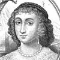Viscountess Falkland
-
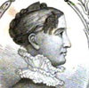Mrs. Susan Huntington
-
 Mrs. Sarah Edwards
Mrs. Sarah Edwards -
 Mrs. Isabella Graham
Mrs. Isabella Graham -
 Mrs. Ann H. Judson
Mrs. Ann H. Judson -
 Miss Hannah Adams
Miss Hannah Adams -
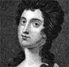Mrs. Ann Dutton
-
 Mrs. Margaret Walker
Mrs. Margaret Walker -
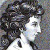Miss Bacon
Search OCLC WorldCat for this title.
Search Google Books for this title.
Badley, Mary Scott. Leaves From Lucknow. [New York]: Rindge Missionary Literature, [1880-1900?].
NOT=autobiography. Four-page item.
Search OCLC WorldCat for this title.
Search Google Books for this title.
Baker, Franc. Historical Sketches of the Northwestern Branch of the Woman's Foreign Missionary Society of the Methodist Episcopal Church. Chicago: Jameson & Morse, 1887.
Search OCLC WorldCat for this title.
Search Google Books for this title.
Bald, Marjory Amelia. Women Writers of the Nineteenth Century. Cambridge: Cambridge University Press, 1923.
TOC: Jane Austen; Anne Bronte; Charlotte Bronte; Emily Bronte; Mrs. E. C. Gaskell.
Search OCLC WorldCat for this title.
Search Google Books for this title.
Baldwin, George Colfax [1817-1899]. Representative Women: From Eve, the Wife of the First, to Mary, the Mother of the Second Adam. Philadelphia and New York: American Baptist Publication Society, 1855; New York: Sheldon, Lamport & Blakeman, 1855; 1856; 1857; 1860; 1885. New York and Boston: Sheldon, Gould & Lincoln, [1900-1938?].
TOC: Eve; Sarah; Rebecca; Jochebed; Miriam; Ruth; Endor’s Witch; Abigail; Sheba’s Queen; Esther; Elizabeth; Mary.
Search OCLC WorldCat for this title.
Search Google Books for this title.
Balfour, Clara Lucas Liddell. The Bible Pattern of a Good Woman. London: Partridge, [1867].
Bodleian NOT:=religious advice, typology. An 80-pp. tract with didactic examples, but not collective biography. Incl. 16-pp. catalogue, “Illustrated Books Suitable for Presents and Distribution,” with ads for British Workman and other “One Penny Monthly” magazines published by Partridge. Endpaper title list incl. biography of the Prince Consort, otherwise non-biographical works. Balfour is listed as author of Passages in the History of a Shilling (Partridge).
Search OCLC WorldCat for this title.
Search Google Books for this title.
---. Moral Heroism; or, The Trials and Triumphs of the Great and Good. London: Houlston & Stoneman, 1846; 1848. Philadelphia: American Sunday-School Union, 1850.
British Library. NOT=male-female collective biography. Twelve chapters with titles that place the qualities first, the names of male examplars next, and include only two women's names, Lady Russell and Elizabeth Fry. Cf. pairing of "great and good" or "good and great" in titles by Robert Cochrane, Kirkes, Sargeant, and Sigourney.
Search OCLC WorldCat for this title.
Search Google Books for this title.
---. A Sketch of Charlotte Elizabeth. London: Cash, 1854.
British Library stamp 1855: Brown cloth, paper boards. This is part of the following:
Search OCLC WorldCat for this title.
Search Google Books for this title.
---. [Biographical series of pamphlets: Elizabeth Smith, Hannah Kilham, Ann H. Judson, Mrs. Barbauld, Hannah More and Her Sisters, Mrs. M. L. Duncan, Mrs. Sherman, Mrs. Trimmer, Sarah Martin ]. London: Cash, 1854.
British Library. The binding and cataloguing obscure the contents. E.g.: Ann H. Judson turns out to be a handy little book with “Missionaries” printed on its cover, containing a life of Judson followed unexpectedly by a life of Kilham. “Philanthropists: Second Series” has Martin followed by Mary Lundie Duncan. Grouping makes the onomastic system of cataloguing more fallible.
Search OCLC WorldCat for this title.
Search Google Books for this title.
---. The Women of Scripture. London: Houlston & Stoneman, 1847; 1850; 1851.
Bodleian uncut. “It is necessary to keep in mind from what horrors the Israelites had been delivered, before we can understand Deborah's eulogium on the stern and unrelenting Jael” (100). “The characters of the illustrious women of the New Testament have less of external incident and more of internal principle, than those of the Old” (221).
Search OCLC WorldCat for this title.
Search Google Books for this title.
---. Women Worth Emulating. New York: American Tract Society; London: Sunday-School Union, 1877.
Bodleian British Library.
TOC: Mrs. Mary Somerville; Charlotte Elliott; Caroline Herschel; Elizabeth Smith; Amelia Opie; Sarah Martin and the Last Duchess of Gordon; Jane and Anne Taylor (Mrs. Gilbert).
-
 Mary Somerville
Mary Somerville -
 Miss Charlotte Elliott
Miss Charlotte Elliott -
 Caroline Herschel
Caroline Herschel -
 Elizabeth Smith
Elizabeth Smith -
 Amelia Opie
Amelia Opie -
 Sarah Martin
Sarah Martin -
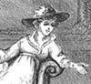The Last Duchess of Gordon
-
 The Home at Ongar
The Home at Ongar
Search OCLC WorldCat for this title.
Search Google Books for this title.
---. Working Women of the Last Half Century: The Lessons of Their Lives. London: W. & F. G. Cash, 1854; 1856; Bennett, 1860. 3d ed., as Working Women of This Century: The Lesson of Their Lives. London & and New York: Cassell, Petter, & Galpin, 1868.
TOC: TOC of 1854 ed: Introductory; Mrs. Trimmer; Mrs. Hannah More and her Sisters; Mrs. Barbauld; Elizabeth Smith; Charlotte Elizabeth; Mrs. Sherman; Mrs. Mary Lundie Duncan; Sarah Martin; Mrs. Ann H. Judson; 1868 edition adds: Hannah Kilham; Charlotte Brontë. *Pop Chart.
British Library. The pamphlets above rebound in single volume?
Search OCLC WorldCat for this title.
Search Google Books for this title.
Baring-Gould, S[abine]. Virgin Saints and Martyrs. London: Hutchinson, 1900. New York: Crowell, 1901.
TOC: Blandina the slave; S. Caecilia; S. Agnes; Febronia of Sibapte; The daughter of Constantine; The sister of S. Basil; Geneviève of Paris; The sister of S. Benedict; S. Bridget; The daughters of Bridget; S. Itha; S. Hilda; S. Elfleda; S. Werburga; A prophetess; S. Clara; S. Theresa; Sister Dora.
Title page: S. Baring-Gould, "Author of The Lives of the Saints. With sixteen full-page illustrations by F. Anger." New York Times obituary notes Rev. S. Baring-Gould's death on 5 June 1906 on shipboard at Port Elizabeth (dateline Cape Town, Cape Colony, June 4). An English clergyman (M.A. Oxford 1860) who traveled to and wrote about Iceland, he wrote many books on myth, church history, and medieval and regional histories. His version of Sister Dora is largely reprinted in Mabie and Stephens, Heroines Every Child Should Know. Viewing Sister Dora as a "double" of Saint Theresa with more practical achievement, Baring-Gould weighs the evidence for Sister Dora's sanctity in various accounts, including Lonsdale's biography.
-
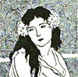Blandina the Slave
-
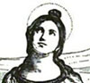St. Cecilia
-
 St. Agnes
St. Agnes -
 Febronia of Sibapte
Febronia of Sibapte -
 The Daughter of Constantine
The Daughter of Constantine -
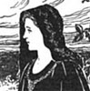The Sister of St. Basil
-
 St. Genevieve
St. Genevieve -
 The Sister of St. Benedict
The Sister of St. Benedict -
St. Bridget of Kildare
-
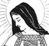St. Itha
-
 St. Hilda
St. Hilda -
 St. Elfleda
St. Elfleda -
 St. Werburga
St. Werburga -
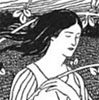St. Clara
-
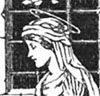St. Theresa
-
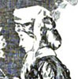Sister Dora
Search OCLC WorldCat for this title.
Search Google Books for this title.
Barker, Nettie Garmer. Kansas Women in Literature. Kansas City: Meseraull & Son, 1915.
TOC: Effie Graham; Esther M. Clark; Mary Vance Humphrey; Kate A. Aplington; Emma Upton Vaughn; Jessie Wright Whitecomb; Myra Williams Jarrell; Ellen Palmer Allerton; Emma Tanner Wood; Cornelia M. Stockton; Margaret Hill McCarter; Bessie May Bellman; June Bellman Henthorne; Amanda T. Jones; Charlotte F. Wilder; Anna L. January; Hattie Horner Louthan; Georgiana Freeman McCoy; Mary Freeman Startzman; Eva Morley Murphy; Sallie F. Toler; Margaret Perkins; Anna E. Arnold; Mary A. Cornelius.
Search OCLC WorldCat for this title.
Search Google Books for this title.
Barnard, David Nowell. Biblical Women: Giving a Correct Biographical Description of Every Female Mentioned in Scripture, With Explanatory Remarks. Cincinnati, OH: Hart, 1863.
Search OCLC WorldCat for this title.
Search Google Books for this title.
Barnes, William Goodman. Women in the Bible. London: Marshall, [1920-29?].
Search OCLC WorldCat for this title.
Search Google Books for this title.
Barrington, E. [i.e. Lily (Moresby) Adams Beck]. The Ladies! A Shining Constellation of Wit and Beauty. Boston: Atlantic Monthly, 1922. London: Fisher, 1922; 1923. London: Benn, 1927.
TOC: “The Diurnal of Mrs. Elizabeth Pepys: Had She Read her Husband's Diary; The Mystery of Stella: Why might not She and Vanessa Have Met?; My Lady Mary: To Dispel the Mystery of Lady Mary Wortley Montagu's quitting England in 1739; The Golden Vanity: A Story of the First Irish Beauties—the Gunnings; The Walpole Beauty: A Tale in Letters about Maria Walpole, . . . Niece of Horace Walpole; A Bluestocking at Court: Why Fanny Burney, Madame D'Arblay, Retired from Court in 1791; The Darcys of Rosing: A Reintroduction to Some of the Characters of Miss Austen's Novels.”.
NOT:=biographical fiction. Preface: “The aim of these stories is not historical accuracy. . . . rather . . . to re-create the personalities of a succession of charming women. . . . as I have imagined them” (n.p.).
-
 Elizabeth Gunning
Elizabeth Gunning -
 Mrs. Pepys
Mrs. Pepys -
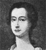Esther Johnson, “Stella”
-
 Hester Vanhomrigh, “Vanessa”
Hester Vanhomrigh, “Vanessa” -
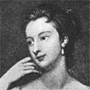Mary Wortley Montagu
-
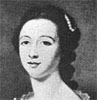Maria Gunning
-
 Maria Walpole
Maria Walpole -
 Fanny Burney, Madame D’Arblay
Fanny Burney, Madame D’Arblay
Search OCLC WorldCat for this title.
Search Google Books for this title.
Barton, William E. The Women Lincoln Loved. Indianapolis: Bobbs-Merrill; London: Melrose, 1927.
See Hopkins re Napoleon.
Search OCLC WorldCat for this title.
Search Google Books for this title.
Batley, Dorothea Sibella, and Annalice Mary Robinson. Devotees of Christ: Some Women Pioneers of the Indian Church. 2d ed., London: Church of England Zenana Missionary Society, 1937. 3d ed., [1938-59?].
Search OCLC WorldCat for this title.
Search Google Books for this title.
Beach, Seth Curtis. Daughters of the Puritans: A Group of Brief Biographies. Boston: American Unitarian Assoc., 1905; 1907. London: Philip Green, 1907.
TOC: Catharine Maria Sedgwick; Mary Lovell Ware; Lydia Maria Child; Dorothea Lynde Dix; Sarah Margaret Fuller Ossoli; Harriet Beecher Stowe; Louisa May Alcott.
Search OCLC WorldCat for this title.
Search Google Books for this title.
Beaird, Miriam G. Notable Women of the Southwest: A Pictorial Biographical Encyclopedia of the Leading Women of Texas, New Mexico, Oklahoma, and Arizona. Dallas: Tardy, 1938.
Search OCLC WorldCat for this title.
Search Google Books for this title.
Beale, Lucy Redd Preston, ed. The Virginian: Woman's Edition. Benefit of Virginia Board of Woman Managers, Cotton States and International Exposition. [Lynchburg, VA], 1895.
Search OCLC WorldCat for this title.
Search Google Books for this title.
Bearne, Catherine M. Four Fascinating Frenchwomen. Illustrated. London: Unwin; New York: Brentano, 1910.
TOC: Adelaide Filleul; Claire de Kersaint; Maire Caroline de Bourbon; Princess Mathilde de Bonaparte.
Search OCLC WorldCat for this title.
Search Google Books for this title.
---. Heroines of French Society, in the Court, the Revolution, the Empire, and the Restoration. London: Unwin, 1907 [1906]; New York: Dutton, 1906; 1907.
TOC: Madame Vigée le Brun; La Marquise de Montagu; Madame Tallien; Madame de Genlis.
-
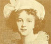Madame Le Brun
-
 Marie Antoinette, Queen of France
Marie Antoinette, Queen of France -
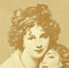Madame Le Brun
-
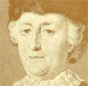Catherine II, Empress of Russia
-
 Comtesse D’Andlau
Comtesse D’Andlau -
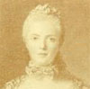Madame Adelaide
-
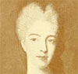Madame Sophie
-
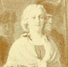Marie Antoinette
-
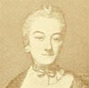Marie de Vichy-Chambron, Marquise du Deffand
-
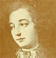La Marquise de Pompadour
-
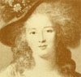Madame Royale
-
 Judith Pasta
Judith Pasta -
 Malibran
Malibran
Search OCLC WorldCat for this title.
Search Google Books for this title.
---. Lives and Times of the Early Valois Queens. Illustrated. New York: Dutton, 1898. London: Unwin, 1899.
TOC: Jeanne de Bourgogne; Blanche de Navarre; Jeanne d'Aurvergne et de Boulogne.
Search OCLC WorldCat for this title.
Search Google Books for this title.
---. Pictures of the Old French Court; Jeanne de Bourbon, Isabeau de Bavière, Anne de Bretagne. Illustrated by Edward H. Bearne. London: Unwin; New York: Dutton, 1900.
Search OCLC WorldCat for this title.
Search Google Books for this title.
---. A Royal Quartette. London: Unwin, 1908. New York: Brentano, 1909.
TOC: Marie Adélaïde de Savoie, Duchess of Burgundy; Madame Adélaïde, Daughter of Louis XV; Maria Luisa, Infanta of Spain, Daughter of Carlos IV., Wife of Carlo Ludovico of Parma, King of Etruria; Marie Amélie Thérèse of Naples, Wife of Louis Philippe, King of the French.
French, Italian, Spanish subjects, no duplication of a065. Each subject gets 10-12 chapters that intertwine many people in the royal houses.
-
 Marie Adelaide de Savoie
Marie Adelaide de Savoie -
 Louise de la Valliere
Louise de la Valliere -
 Elisabeth Charlotte
Elisabeth Charlotte -
 Athenais de la Rochechouart
Athenais de la Rochechouart -
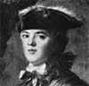Louise Elisabeth
-
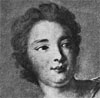Marie Anne de Nesle
-
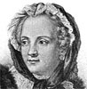Marie Leczinska
-
 Anne Henriette Marie
Anne Henriette Marie -
 Adelaide, Victoire and Sophie
Adelaide, Victoire and Sophie -
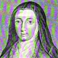Louise
-
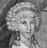Maria Luisa
-
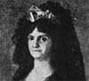Maria Luisa, Infanta of Parma
-
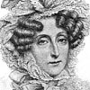Marie Amelie
-
 Louise Marie Adelaide de Bourbon-Penthievre
Louise Marie Adelaide de Bourbon-Penthievre -
 Adelaide
Adelaide
Search OCLC WorldCat for this title.
Search Google Books for this title.
Beaton, Cecil. The Book of Beauty. London: Duckworth, 1930.
British Library. Frontispiece: cartoonish painting of Queen Alexandra; titlepage vignette: drawing of a generic beauty under glass. Edition limited to 110, signed No. 110. Thirty-nine subjects, including Lillie Langtry, the Beaton sisters, Miss Edith Sitwell, Mrs. Virginia Woolf, Miss Tallulah Bankhead, Miss Lilian Gish, Miss Norma Shearer, Miss Greta Garbo, Miss Gertrude Lawrence, Miss Anita Loos, Lady Cunard. Some women of rank. “Unlike other children, my greatest heroines were not the Maid of Orleans or the Lady of the Lamp [sic], but Lily Elsie, Gabrielle Ray and Queen Alexandra” (1). “There will be disagreement about my choice. . . far from complete” (3). This “is the first attempt at an up-to-date version of the old books of beauty” with their stylized scenes “unreal but divinely pretty” (4). In modern times, women reincarnate famous types: “Mrs. Peter Thursby as our Nell Gwynne, Lady Juliet Duff as Mrs. Siddons; Lady Hamilton imitated the plastic poses of Cleo, Agrippina and Diana [sic], and Lady Lavery poses as Lady Hamilton. But how many of these beauties . . . will make history?” (5). “Mrs. Virginia Woolf is one of the most gravely distinguished-looking women I have ever seen. . . . She has all the chaste and sombre beauty of village schoolmistresses, housekeepers, and nuns. . . . one realises that a face can be a reverend and sacred thing”: a heroine like Mrs. Dalloway, unsuited to makeup (37-38).
Search OCLC WorldCat for this title.
Search Google Books for this title.
Beaton, Rev. Donald. Scottish Heroines of the Faith: Being Brief Sketches of Noble Women of the Reformation and Covenant Times. London and Glasgow: Catt; Adshead, 1909.
TOC: Mrs. Ronaldson (Helen Stirk), Perth; Mrs. Welsh; Mrs. James Guthrie, Stirling; Mrs. Brown, Priesthill; Margaret Lachlison (Maclachlan and Margaret Wilson; Isabel Alison; Marion Harvey; Duchess of Rothes; Marchioness of Hamilton; Lady Caldwell; Viscountess of Kenmore; Marchioness of Argyll; Mrs. John Carstares; Lady Boyd; Lady Colvill; Lady Culross; Mrs. William Veitch; Mrs. John Livingstone; Mrs. James Durham.
Cf. Anderson, The Ladies of the Covenant / of the Reformation, 1850-1855.
Search OCLC WorldCat for this title.
Search Google Books for this title.
Beaumont, E. de. Women and Cruelty. London, 1905.
Possible source of a pseudonym: Edouard de Beaumont, L'Epée et les femmes (1881); Chevalier d'Eon de Beaumont, celebrated “hermaphrodite” featured in various English works, 1860s-1900, and in Andrew Lang, Historical Mysteries (London: Smith, Elder, 1904). NOT?
Search OCLC WorldCat for this title.
Search Google Books for this title.
Beedy, Helen Coffin. Mothers of Maine. Portland, ME: Thurston Print, 1895.
Search OCLC WorldCat for this title.
Search Google Books for this title.
Bell, Margaret. Women of the Wilderness. New York: Dutton, 1938.
Search OCLC WorldCat for this title.
Search Google Books for this title.
Ben-Asher, Naomi. Great Jewish Women Throughout History. New York: Education Dept., Hadassah, 1939. As: The Jewish Woman Throughout History: A Course of Lectures in Seven Outlines. New York: Hadassah, n.d. Jersey City: n.p., n.d.
Search OCLC WorldCat for this title.
Search Google Books for this title.
Bennett, Helen Christine. American Women in Civic Work. New York: Dodd, Mead, 1915; 1919.
TOC: Preface; Caroline Bartlett Crane; Sophie Wright; Jane Addams; Kate Barnard; Albion Fellows Bacon; Hannah Kent Schoff; Frances A. Kellor; Julia Tutwiler; Lucretia L. Blankenburg; Anna Howard Shaw; Ella Flagg Young.
“Portions of the sketches which appear in this book have been published serially, principally in the Pictorial Review and the American Magazine.”
Search OCLC WorldCat for this title.
Search Google Books for this title.
Betham-Edwards, Matilda Barbara [1836-1919]. Mid-Victorian Memories ...with a Personal Sketch by Mrs. Sarah Grand. London: Murray; New York: Macmillan, 1919.
NOT=auto/biography; fewer than three subjects.
Search OCLC WorldCat for this title.
Search Google Books for this title.
---. Six Life Studies of Famous Women: With Six Portraits Engraved on Steel. London: Griffith & Farran; New York: Dutton, 1880.
TOC: Fernan Caballero (Spanish Novelist); Alexandrine Tinn (African Explorer); Caroline Herschel (Astronomer and Mathematician); Marie Pape-Carpantier (Educational Reformer); Elizabeth Carter (Scholar); Matilda Betham (Litterateur and Artist). *Pop Chart.
In British Library under Edwards.
-
Fernan Caballero
-
Alexandrine Tinne
-
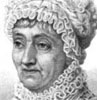Caroline Herschel
-
Marie Pape-Carpantier
-
Elizabeth Carter
-
Matilda Betham
Search OCLC WorldCat for this title.
Search Google Books for this title.
Bethune, George Washington. The British Female Poets: With Biographical and Critical Notices. Philadelphia: Lindsay & Blackiston, 1848; 1849; 1853; 1854; 1858; 1865. New York: Butler, 1849; Allen, 1869; Hurst, 1848, [1860-69?]; Crowell, n.d. As: Pearls from the British Female Poets, New York: World, 1875.
TOC: Juliana Berners; Anne Boleyn; Catharine Parr; Lady Bergavenny; Countess of Arundel; Mary, Queen of Scots; Queen Elizabeth; Countess of Pembroke; Lady Elizabeth Carew; Katharine Philips; Duchess of Newcastle; Mrs. Anne Steele; Anna Williams; Elizabeth Carter; Mrs. Greville; Lady Anne Barnard; Miss Jane Elliot; Mrs Cockburn; Mrs. Anne Hunter; Susanna Blamire; Mrs. Mary Robinson; Mrs. Charlotte Smith; Anne Yearsly; Mrs. Grant of Laggan; Joanna Baillie; Maria Jane Jewsbury; Mrs. Hemans; Letitia Elizabeth Landon; Lady Flora Hastings; Mary Anne Browne; Charlotte Elizabeth; Mrs. Amelia Opie; Mary Russell Mitford; Mrs. Eliza Cook; Mrs. Sarah Henry Coleridge; Miss Lowe; Frances Kemble Butler.
Search OCLC WorldCat for this title.
Search Google Books for this title.
Bhattacharyya, Panchanan. Ideals of Indian Womanhood. With a Foreword by A. Chaudhuri. Calcutta: Goldguin, 1921.
Search OCLC WorldCat for this title.
Search Google Books for this title.
Biddle, Gertrude Bosler, Sarah Dickinson Lowrie, et al., eds. Notable Women of Pennsylvania. Philadelphia: University of Pennsylvania Press, 1942.
British Library.
Search OCLC WorldCat for this title.
Search Google Books for this title.
Binheim, Max, and Charles A. Elvin, eds. Women of the West: A Series of Biographical Sketches of Living Eminent Women in the Eleven Western States of the United States of America. Los Angeles: Publishers Press, 1928.
Search OCLC WorldCat for this title.
Search Google Books for this title.
A Biographical Record of Queensland Women: A Representation of Every Sphere. Brisbane: Webb & Elliott, 1939.
Search OCLC WorldCat for this title.
Search Google Books for this title.
Birrell, Francis, ed. Six Brilliant English Women. London: Gerald Howe, 1930.
TOC: Annie Wood Besant; Lady Hester Lucy Stanhope; Elizabeth Barrett Browning; Eizabeth Chudleigh Countess of Bristol; Aphra Behn; Sarah Jennings Churchill, Duchess of Marlborough. Contributors: V. S-W, Bonamy Dobree, Beatrice Curtis Brown, Martin Armstrong, Irene Cooper Willis, “Geoffrey West.” *Pop Chart .
Also listed as Sackville-West, Vita, et al.
Search OCLC WorldCat for this title.
Search Google Books for this title.
Black, Helen C. Notable Women Authors of the Day. Glasgow: D. Bryce, 1893. London: n.p., 1893. London: Maclaren, 1906.
TOC: Mrs. Lynn Linton; Mrs. Riddell; Mrs. L. B. Walford; Rhoda Broughton; John Strange Winter (Mrs. Arthur Stannard); Mrs. Alexander; Helen Mathers; Florence Marryat; Mrs. Lovett Cameron; Mrs. Hungerford; Matilda Betham Edwards; Edna Lyall; Rosa Nouchette Carey; Adeline Sergeant; Mrs. Edward Kennard; Jessie Fothergill; Lady Duffus Hardy; Iza Duffus Hardy; May Crommelin; Mrs. Houstoun; Mrs. Alex. Fraser; Honourable Mrs. Henry Chetwynd; Jean Middlemass; Augusta De Grasse Stevens; Mrs. Leith Adams; Jean Ingelow.
“These sketches originally appeared as a series in the ‘Lady's pictorial’ ... They are now revised, enlarged and brought up to date.”
-
 Mrs. Lynn Linton
Mrs. Lynn Linton -
 Mrs. Riddell
Mrs. Riddell -
Mrs. L. B. Walford
-
Rhoda Broughton
-
 Mrs. Arthur Stannard (John Strange Winter)
Mrs. Arthur Stannard (John Strange Winter) -
Mrs. Alexander
-
 Mrs. Reeves (Helen Mathers)
Mrs. Reeves (Helen Mathers) -
Florence Marryat
-
 Mrs. Lovett Cameron
Mrs. Lovett Cameron -
Mrs. Hungerford
-
 Matilda Betham Edwards
Matilda Betham Edwards -
 Edna Lyall
Edna Lyall -
 Rosa Nouchette Carey
Rosa Nouchette Carey -
Adeline Sergeant
-
 Mrs. Edward Kennard
Mrs. Edward Kennard -
Jessie Fothergill
-
 Lady Duffus Hardy
Lady Duffus Hardy -
Iza Duffus Hardy
-
May Crommelin
-
 Mrs. Houstoun
Mrs. Houstoun -
 Mrs. Alexander Fraser
Mrs. Alexander Fraser -
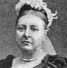Honourable Mrs. Henry Chetwynd
-
 Jean Middlemass
Jean Middlemass -
 Augusta de Grasse Stevens
Augusta de Grasse Stevens -
 Mrs. Leith Adams (Mrs. Laffan)
Mrs. Leith Adams (Mrs. Laffan) -
Jean Ingelow
-
 Annie S. Swan (Mrs. Burnett Smith)
Annie S. Swan (Mrs. Burnett Smith) -
 Sarah Grand
Sarah Grand -
 Mrs. Desmond Humphreys (“Rita”)
Mrs. Desmond Humphreys (“Rita”)
Search OCLC WorldCat for this title.
Search Google Books for this title.
Blackburne, E. Owens [i.e. Elizabeth Casey]. Illustrious Irishwomen: Being Memoirs of Some of the Most Noted Irishwomen from the Earliest Ages to the Present Century. 2 vols., London: Tinsley, 1877.
TOC: vol. 1: Early Irish Period Introductory Chapter; Queen Macha; Queen Méave; Saint Brigit; Dearbhforguill; Eva, Princess of Leinster; Mediaeval Period; Margaret O'Carroll; The Old Countess of Desmond; The Fair Geraldine; Grainne O'Mailly; Lettice, Baroness Ophaly; La Belle Hamilton; Famous Actresses; Margaret Woffington; George Anne Bellamy; "Perdita" (Mrs. Robinson); Kitty Clive; Dorothy Jordan; Elizabeth Farren; Maria Pope; Miss O'Neill; Catherine Hayes; vol. 2: Literary Women; Susanna Centlivre; The Honourable Mrs. Monk; Constantia Grierson; Charlotte Brooke; Mrs. Mary Tighe; Mary Boyle (Countess of Warwick); Henrietta Boyle (Lady O'Neil); Maria Edgeworth; Felicia Dorothea Hemans; The Misses Porter; Sydney, Lady Morgan; Marguerite, Countess of Blessington; Eliza Ryves; Helen Selina, Countess of Dufferin; Lady Stirling-Maxwell; Miscellaneous; Lady Freemason; The Beautiful Gunnings; The Ladies of Llangollen; Lady Louisa Conolly; Sarah Curran.
Also catalogued under Casey.
Search OCLC WorldCat for this title.
Search Google Books for this title.
Blackman, Lucy Worthington. The Women of Florida. Jacksonville, FL: Southern Historical, 1940.
Search OCLC WorldCat for this title.
Search Google Books for this title.
Blackwell, Elizabeth. Pioneer Work in Opening the Medical Profession to Women: Autobiographical Sketches. London and New York: Longmans, Green; Hastings: Barry, 1895. As: Pioneer Work for Women. Introduction by Milicent Fawcett. London: J. M. Dent; New York: Dutton, 1914.
NOT=auto/biography; fewer than three subjects. Includes examples of women's careers. British Library lists Dent, 1914 edition under the former title. Blackwell is a frequent subject, Fawcett a presenter and (rarely) a subject.
Search OCLC WorldCat for this title.
Search Google Books for this title.
Blain, Alexander C. Heroines of History: Eleven Little Plays of Great Women. London: Epworth, 1939.
NOT=drama.
Search OCLC WorldCat for this title.
Search Google Books for this title.
Blair, Gertrude. Historical Sketches of Southwest Virginia Pioneer Women, 1750-1940. Virginia Federal Writers' Project. Roanoke, VA: n.p., 1940.
“Individual biographies dated 1937-1938 . . . compiled in 1940.”
Search OCLC WorldCat for this title.
Search Google Books for this title.
Blair, Ruth, comp. Georgia Women of 1926. [Atlanta?]: Georgia Department of Archives and History, 1926.
Search OCLC WorldCat for this title.
Search Google Books for this title.
Blashfield, Evangeline Wilbour. Portraits and Backgrounds. New York: Scribner's, 1917.
TOC: Hrotsvitha; Aphra Behn; Charlotte Élisabeth Aïssé; Rosalba Carriera. *Pop Chart.
Blashfield co-edited (with Edwin Howland Blashfield and others) an edition of Vasari's Lives of . . . Painters (Scribner's, 1897), co-authored with Edwin Howland Blashfield, Italian Cities (Scribner's, 1902)--including “In Florence with Romola,” and wrote Manon Philipon Roland: Early Years (New York: Scribner's, 1922), a biography of Madame Roland, published posthumously (Evangeline died 1918, Edwin in 1936).
Search OCLC WorldCat for this title.
Search Google Books for this title.
Bleackley, Horace William. Ladies Fair and Frail: Sketches of the Demi-Monde during the Eighteenth Century. With Sixteen Illustrations. London and New York: Lane, 1909; 1925; Dodd, Mead, 1926.
TOC: Fanny Murray; Kitty Fisher; Nancy Parsons; Kitty Kennedy; Grace Dalrymple Eliot; Gertrude Mahon.
Bleackley includes bibliographies that document “his labours in the lighter fields of historical research,” in contrast with the “perfunctory” biographies that have “swamped the market”; “the rapid craftsman is most sure of recognition” (Preface, viii). In an endpage advertisement, Bleackley receives praise from prestigious journals (e.g. Athenaeum ) for his sound historical research.
-
 Kitty Fisher
Kitty Fisher -
 Fanny Murray
Fanny Murray -
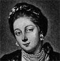Kitty Fisher
-
 Nelly O’Brien
Nelly O’Brien -
 Nancy Parsons
Nancy Parsons -
 Miss Kennedy
Miss Kennedy -
 Polly Jones
Polly Jones -
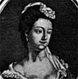Kitty Kennedy
-
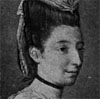Betsy Cox
-
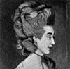Grace Dalrymple Eliot
-
 Charlotte Spencer
Charlotte Spencer -
 Miss Fitzwilliam
Miss Fitzwilliam -
 Gertrude Mahon
Gertrude Mahon -
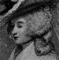Letitia, Lady Lade
-
 Kitty Frederick
Kitty Frederick -
 Gertrude Mahon
Gertrude Mahon
Search OCLC WorldCat for this title.
Search Google Books for this title.
Blessington, Marguerite, Countess of [1789-1849], ed. The Book of Beauty, or Regal Gallery. London: Bogue, 1848; 1849. New York: Appleton, 1848; 1849. As Heath's Book of Beauty (an annual), London and New York: Longman [etc.], 1834-36; 1839; 1840; 1842; 1846.
Annual, Heath's Book of Beauty, begun in 1834. Corresponds with Jerrold, Finden, Burke, and Jameson. "Gallery" is a literal and figurative premise for at least twenty collections in this bibliography.
Blessington also ed. Keepsake from 1841. L.E.L. also listed as editor.
TOC: Queen Victoria; Isabella of Angouleme; Marguerite of France; Isabella of France; Anne of Bohemia; Catharine; Margaret of Anjou; Elizabeth of York; Katharine of Arragon; Mary the First; Elizabeth; Anne.
-
 Queen Victoria
Queen Victoria -
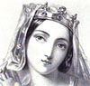Isabella of Angouleme
-
 Marguerite of France
Marguerite of France -
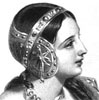Isabella of France
-
Anne of Bohemia
-
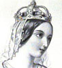Catherine
-
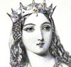Margaret of Anjou
-
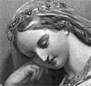Elizabeth of York
-
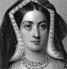Katharine of Arragon
-
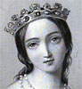Mary the First
-
 Elizabeth
Elizabeth -
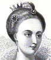Anne
Search OCLC WorldCat for this title.
Search Google Books for this title.
Bloss, Celestia Angenette. Heroines of the Crusades. Muscatine, IA: R. M. Burnett, 1852; 1853. Detroit: Herr, Doughty & Lapham, 1853. Rochester, NY: Lippincott, 1853; 1881. Auburn, NY: Alden, Beardsley, 1853; 1854; 1855; 1857. New York: J. C. Derby, 1853. New Orleans: Burnett & Bostwick, 1853; 1854. Philadelphia: Lippincott, 1887.
TOC: Adela of Blois; Eleanor of Aquitaine; Berengaria of Navarre; Isabella of Angouleme; Violante of Jerusalem; Eleanora of Castile.
Search OCLC WorldCat for this title.
Search Google Books for this title.
Blunt, H[ugh] F[rancis]. The Great Magdalens. New York: Macmillan, 1928.
TOC: Penitents of the Stage; Voices from the Desert; Magdalens of the Ages of Penance; The Woman Augustine Loved; Rosamond Clifford; Saint Margaret of Cortona; Blessed Angela of Foligno; Blessed Clare of Rimini; Saint Hyacintha of Mariscotti; Catalina de Cardona, "The Sinner"; Beatrice Cenci; The Princess Palatine; Madame de Longueville; Louise de la Valliere; Madame de Montespan; Madame de la Sablire; Madame Pompadour; Madame Tiquet. *Pop Chart.
Search OCLC WorldCat for this title.
Search Google Books for this title.
---. Great Wives and Mothers. New York: Devin-Adair, 1917; 1923; 1927.
TOC: Mothers and Martyrs; Matrons of the Early Church; St. Monica; The Queen Saints; St. Elizabeth of Hungary; St. Rita; Royal Ladies; Isabella the Catholic; Margaret Roper; Margaret Clitherow; Anna Maria Taigi; Elizabeth Seton; Jerusha Barber; Mary O'Connell; Lady Georgianna Fullerton; Margaret Haughery; Pauline Craven; Some Literary Wives and Mothers. *Pop Chart.
Search OCLC WorldCat for this title.
Search Google Books for this title.
Boehme, Harry. Women of the Bible. Richmond, VA: Presbyterian, 1922.
Search OCLC WorldCat for this title.
Search Google Books for this title.
Boggie, Jeannie Marr Manson. Experiences of Rhodesia's Pioneer Women: Being a True Account of the Adventures of the Early White Women Settlers in Southern Rhodesia from 1890. Bulawayo, Southern Rhodesia: Philpott & Collins, 1938.
Search OCLC WorldCat for this title.
Search Google Books for this title.
BolithoWilliam Twelve Against the Gods: The Story of Adventure New York: Simon and Schuster 1929
TOC: Alexander the Great; Casanova; Christopher Columbus; Mahomet; Lola Montez; Cagliostro (and Seraphina); Charles XII of Sweden; Napoleon I; Lucius Sergius Catiline; Napoleon III; Isadora Duncan; Woodrow Wilson.
NOT=male-female collective biography.
Search OCLC WorldCat for this title.
Search Google Books for this title.
Bolton, Sarah Knowles. Famous Leaders Among Women. New York and Boston: Crowell, 1895.
See How To Make It as a Woman, 57.
TOC: Madame de Maintenon; Catharine II. of Russia; Madame le Brun; Dolly Madison; Catherine Booth; Lucy Stone; Lady Henry Somerset; Julia Ward Howe; Queen Victoria. *Pop Chart.
Of 16 collections by Bolton listed in Riches, 4 are all-female.
-
 Julia Ward Howe
Julia Ward Howe -
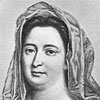Madame de Maintenon
-
Catherine II. of Russia
-
Madame le Brun
-
 Dolly Madison
Dolly Madison -
Catherine Booth
-
 Lucy Stone
Lucy Stone -
 Lady Henry Somerset
Lady Henry Somerset -
 Queen Victoria
Queen Victoria
Search OCLC WorldCat for this title.
Search Google Books for this title.
---. Famous Types of Womanhood. New York: T. Y. Crowell, 1886; 1892.
See How To Make It as a Woman, 57.
TOC: Queen Louise of Prussia; Madame Récamier; Susanna Wesley; Harriet Martineau; Jenny Lind; Dorthea Lynde Dix; Ann, Sarah, and Emily Judson; Amelia Blandford Edwards. *Pop Chart.
-
Queen Louise
-
Madame Recamier
-
Susanna Wesley
-
Harriet Martineau
-
Jenny Lind
-
 Ann H. Judson
Ann H. Judson -
Emily C. Judson
-
Amelia B. Edwards
Search OCLC WorldCat for this title.
Search Google Books for this title.
---. Lives of Girls Who Became Famous. New York: T. Y. Crowell, 1886; 1914; 1923; 1925?; 1930; 1936; 1938; 1939; 1941; 1949. Djakarta, Indonesia: Endang, 1958. Trans. in Bengali: Dacca: Purbachal Prakashani, 1959. Trans. in Urdu: Lahore: Maktaba-e-Urdu, 1958.
See How To Make It as a Woman, 57.
TOC: Harriet Beecher Stowe; Helen Hunt Jackson; Lucretia Mott; Mary A. Livermore; Margaret Fuller Ossoli; Maria Mitchell; Louisa M. Alcott; Mary Lyon; Harriet G. Hosmer; Madame de Staêl; Rosa Bonheur; Elizabeth Barrett Browning; "George Eliot"; Elizabeth Fry; Elizabeth Thompson Butler; Florence Nightingale; Lady Brassey; Baroness Burdett-Coutts; Jean Ingelow.
TOC: TOC 1925(?): Elizabeth Barrett Browning; George Eliot; Florence Nightingale; Jean Ingelow; Jenny Lind; Madame de Staêl; Rosa Bonheur; Harriet Beecher Stowe; Helen Hunt Jackson; Lucretia Mott; Mary A. Livermore; Margaret Fuller Ossoli; Maria Mitchell; Louisa M. Alcott; Mary Lyon; Harriet G. Hosmer; Julia Ward Howe; Jane Addams; Alice Freeman Palmer; Clara Barton; Susan B. Anthony; Anna Howard Shaw; Frances E. Willard; Elizabeth Blackwell; Helen Keller; Lady Astor.
TOC: TOC 1941 : Elizabeth Barrett Browning; George Eliot; Florence Nightingale; Jean Ingelow; Jenny Lind; Madame de Staêl; Rosa Bonheur; Harriet Beecher Stowe; Helen Hunt Jackson; Lucretia Mott; Mary A. Livermore; Margaret Fuller Ossoli; Maria Mitchell; Louisa M. Alcott; Mary Lyon; Harriet G. Hosmer; Julia Ward Howe; Jane Addams; Alice Freeman Palmer; Clara Barton; Susan B. Anthony; Anna Howard Shaw; Frances E. Willard; Elizabeth Blackwell; Helen Keller; Lady Astor; Madame Curie; Madame Chiang Kai-Shek; Amelia Earhart.
TOC: TOC 1949 : Jane Addams; Louisa May Alcott; Marian Anderson; Susan B. Anthony; Clara Barton; Elizabeth Blackwell; Rosa Bonheur; Elizabeth Barrett Browning; Katherine Cornell; Marie Curie; Amelia Earhart; Julia Ward Howe; Helen Keller; Elizabeth Kenny; Jenny Lind; Mary Lyon; Florence Nightingale; Margaret Fuller Ossoli; Frances Perkins; Eleanor Roosevelt; Madame de Staêl; Harriet Beecher Stowe.
Copyright Bolton through 1914. Crowell copyright renewed through 1949. See also Pop Chart
-
 Harriet Beecher Stowe
Harriet Beecher Stowe -
Helen Hunt Jackson
-
 Lucretia Mott
Lucretia Mott -
 Mary A. Livermore
Mary A. Livermore -
 Margaret Fuller Ossoli
Margaret Fuller Ossoli -
 Maria Mitchell
Maria Mitchell -
 Louisa M. Alcott
Louisa M. Alcott -
 Mary Lyon
Mary Lyon -
Harriet G. Hosmer
-
 Madame de Stael
Madame de Stael -
 Rosa Bonheur
Rosa Bonheur -
 Elizabeth Barrett Browning
Elizabeth Barrett Browning -
 George Eliot
George Eliot -
Elizabeth Fry
-
 Florence Nightingale
Florence Nightingale -
Lady Brassey
-
Baroness Burdett-Coutts
-
Jean Ingelow
Search OCLC WorldCat for this title.
Search Google Books for this title.
---. Successful Women. Boston: Lothrop, 1888.
See How To Make It as a Woman, 57.
TOC: Juliet Corson; Mary Louise Booth; Frances E. Willard; Mrs. G. R. Alden ("Pansy"); Mary Virginia Terhune ("Marion Harland"); Margaret; Ella Grant Campbell; Rachel Littler Bodley (by a friend); Candice Wheeler; Clara Barton; Alice E. Freeman (by a friend). *Pop Chart.
-
 Alice E. Freeman
Alice E. Freeman -
 Juliet Corson
Juliet Corson -
Mary L. Booth
-
 Frances E. Williard
Frances E. Williard -
Mrs. G. R. Alden (“Pansy”)
-
 Mary Virginia Terhune (“Marion Harland”)
Mary Virginia Terhune (“Marion Harland”) -
 The Statue to “Margaret of New Orleans”
The Statue to “Margaret of New Orleans” -
 Margaret
Margaret -
Ella Grant Campbell
-
Dr. Rachel Littler Bodley
-
Mrs. Candace Wheeler
-
Miss Dora Wheeler
-
 Clara Barton
Clara Barton
Search OCLC WorldCat for this title.
Search Google Books for this title.
Bothmer, the Countess A. von [Marie], ed. The Sovereign Ladies of Europe. With 153 Illustrations. London: Hutchinson, 1899. Philadelphia: Lippincott, 1900.
British Library. Frontispiece signed portrait of Victoria, The Queen in State Robes "from an engraving of a drawing by A. E. Chalon"; 1900. Preface: "nowadays no crowned head merely lives a life of luxury, regardless of the weal and woe of his subjects. To rule or to reign in our time means work" (v). Sixteen (mostly still living) subjects, several immediately related to Victoria. Many photographs of interiors and gardens, portraits including babies and spouses, and travel narrative place Bothmer (and hence reader) in proximity to private lives of royals.
Search OCLC WorldCat for this title.
Search Google Books for this title.
Bradford, Gamaliel. Daughters of Eve. Boston: Houghton Mifflin, 1930. New York: Houghton Mifflin, 1930. New York: Book League of America, 1930. New Home Library, 1930; 1942. New York: Lincoln Historical Society, 1930; 1942. Port Washington, NY: Kennikat, 1969?
TOC: I. Eve in the Apple-Orchard: Ninon de Lenclos; II. Eve as Love and Serpent: Madame de Maintenon; III. Eve and Almighty God: Madame Guyon; IV. Eve and Adam: Mademoiselle de Lespinasse; V. Eve Enthroned: Catharine the Great; VI. Eve and the Pen: George Sand; VII. Eve in the Spotlight: Sarah Bernhardt. *Pop Chart.
Search OCLC WorldCat for this title.
Search Google Books for this title.
---. Portraits of American Women. Boston and New York: Houghton Mifflin, 1919.
TOC: Abigail Smith Adams; Sarah Alden Ripley; Mary Lyon; Harriet Beecher Stowe; Margaret Fuller Ossoli; Louisa May Alcott; Frances Willard; Emily Dickinson.
“A group of women who were mainly notable for their own achievements, quite independent of the other sex” (Preface, Wives, xi, re Portraits of American Women).
-
Abigail Smith Adams
-
 Sarah Alden Ripley
Sarah Alden Ripley -
 Mary Lyon
Mary Lyon -
Harriet Beecher Stowe
-
 Margaret Fuller Ossoli
Margaret Fuller Ossoli -
 Louisa May Alcott
Louisa May Alcott -
Frances Willard
-
 Emily Dickinson
Emily Dickinson
Search OCLC WorldCat for this title.
Search Google Books for this title.
---. Portraits of Women. Boston and New York: Houghton Mifflin, 1916.
TOC: Lady Mary Wortley Montague; Lady Holland; Miss Austen; Madame d'Arblay [Fanny Burney]; Mrs. Pepys; Madame de Sévigné; Madame du Deffand; Madame de Choiseul; Eugénie de Guérin.
Frenchwomen nearly as dominant as British in this collection. See also Pop Chart
-
Lady Mary Wortley Montagu
-
Elizabeth, Lady Holland
-
Jane Austen
-
Madame d'Arblay
-
Mrs. Pepys as St. Katherine
-
Madame de Sevigne
-
Madame du Deffand
-
Madame de Choiseul
Search OCLC WorldCat for this title.
Search Google Books for this title.
---. Wives. New York and London: Harper, 1925.
TOC: Mrs. Abraham Lincoln; Mrs. Benedict Arnold; Theodosia Burr; Mrs. James Madison; Mrs. Jefferson Davis; Mrs. Benjamin F. Butler; Mrs. James Gillespie Blaine.
“Confessions of a Biographer” reflects on current “fashion” of biography, and the difficulty of the art, with admiration for “Mr. Strachey” (3-14). A separate publication, The Woman Lincoln Married (Boston: Boston Publishing, 1928); clipped from Boston Herald 7-11 Feb. 1928, “five daily installments of ‘Bradford's brilliant study, “Mrs. Abraham Lincoln.”’”


Search OCLC WorldCat for this title.
Search Google Books for this title.
Brailsford, Mabel Richmond. Quaker Women, 1650-1690. London: Duckworth, 1915.
Biographer of William Penn and the Wesley family. NOT:=religious history. Includes 1 p. on Elizabeth Fry (322-3); Hannah Kilham, the Quaker missionary to the Sierra Leon freed slave colony with Anne Thompson (333-4); Elizabeth Hooton; Margaret Fell; Mary Fisher; Barbara Blaugdone. Catalogue.
Search OCLC WorldCat for this title.
Search Google Books for this title.
Brandt, Johanna. The Petticoat Commando: or, Boer Women in Secret Service. London: Mills & Boon, 1913.
Search OCLC WorldCat for this title.
Search Google Books for this title.
Brave Women: [Bible Stories for Children]. Wellington, NZ: Reed, [1940s?]
Search OCLC WorldCat for this title.
Search Google Books for this title.
Brawley, Benjamin Griffith. Women of Achievement: Written for the Fireside Schools, under the Auspices of the Woman's American Baptist Home Mission Society. Chicago: Woman's American Baptist Home Mission Society, 1919.
TOC: The Negro woman in American Life; Harriet Tubman; Nora Gordon; Meta Warwick Fuller; Mary McLeod Bethune; Mary Church Terrell.
Search OCLC WorldCat for this title.
Search Google Books for this title.
Braybrooke, Patrick. Some Goddesses of the Pen. London: Daniel, 1927. Philadelphia: Lippincott, 1928.
TOC: Miss Sheila Kaye-Smith; Miss Rose Macaulay; Miss Ethel M. Dell; The Baroness Orczy; Mrs. Alfred Sidgwick; Miss Cynthia Stockley; Mrs. Henry De La Pasture; Mrs. Baillie-Reynolds.
Search OCLC WorldCat for this title.
Search Google Books for this title.
Bretherton, Margaret. Ten Noble Women. Madras & Colombo: Christian Literature Society for India, 1913.
Search OCLC WorldCat for this title.
Search Google Books for this title.
Brickdale, Eleanor Fortescue. Golden Book of Famous Women. London and New York: Hodder & Stoughton, 1919.
Also listed under Fortescue-Brickdale, and as Eleanor Fortesque Brickdale's Golden Book of Famous Women.
NOT=fiction. A mix of historical fiction and biography, including literary heroines. Elegant album in blue cloth with golden lettering and decoration: a frieze of early-modern figures strolling through an orchard on the front cover. 200 pp. of large type and wide margins. Pasted-in color illustrations by “E.F.B.”: mostly of a solitary woman in a pastoral or garden setting. Exceptions: Abelard embraces an ecstatic Eloise; Beatrice and entourage ascend a formal outdoor staircase to meet Dante and friends facing viewer at summit of picture. Brief excerpts from famous authors; many subjects entirely fictional, e.g. Becky Sharp; Maggie Tulliver. See also Pop Chart
-
 Olivia
Olivia -
 Eloisa
Eloisa -
 Fair Rosamond
Fair Rosamond -
Beatrice
-
Laura
-
Joan of Arc
-
Queen Katherine
-
The Queen’s Marie
-
Una
-
 Titania
Titania -
 Rosalind and Celia
Rosalind and Celia -
Guinevere
-
Maud
-
 Kate Barlass
Kate Barlass -
St. Catherine
-
St. Clare
Search OCLC WorldCat for this title.
Search Google Books for this title.
Brightwell, Cecilia Lucy. Above Rubies; or, Memoirs/Memorials of Christian Gentlewomen. London: Nelson, 1865; 1871. London and New York: Nelson, 1869; 1878; 1879; 1887. Nashville: A. H. Redford, for the M. E. Church, 1874; 1875; 1890; Southern Methodist, 1880; 1883. As: Memorial Chapters in the Lives of Christian Gentlewomen. London: Book Society, 1871-73. Advertised rpt. 1889.
TOC: Anne, Countess of Balcarres & Her Daughter Lady Anne Lindsay; II. Madame Guizot & Her Daughter-in-Law; III. Caroline Perthes; IV. Mrs. Grant, of Laggan; V. Madame Necker; VI. Lady Fanshawe; VII. Winifred Herbert, Countess of Nithsdale; VIII. Louisa, Queen of Prussia; IX. Mrs. Susannah Wesley; X. Katherine von Bora, Luther's wife; XI. Mrs. Lucy Hutchinson.
Search OCLC WorldCat for this title.
Search Google Books for this title.
Bristol, Frank M[ilton]. Heroines of History: Typical Heroines of Mythology, of Shakespeare, of the Bible. New York and Cincinnati, OH: Abingdon, 1914.
Bristol identified as Bishop of the Methodist Episcopal Church. Chapters typically entitled: “The Heroine-Mother: Thetis, Hecuba, Latona,” or “The Heroine-Daughter: Miranda, Cordelia.” See Appleton's Portrait Gallery of Women.
Search OCLC WorldCat for this title.
Search Google Books for this title.
Brockett, Linus Pierpont and Mary C. Vaughan. Woman's Work in the Civil War: A Record of Heroism, Patriotism, and Patience. Philadelphia: Zeigler, McCurdy; Boston: R. H. Curran, 1867. As: Heroines of the Rebellion; or, Woman's Work in the Civil War; A Record of Heroism, Patriotism and Patience. Philadelphia: Hubbard, 1888.
TOC: Miss Dorothea; Miss Eliza Potter; Clara Harlowe Barton; Helen Louise Gilson; Mrs. John harris; Mrs. Eliza C. Porter; Mrs. Mary A. Bickerdyke; Margaret E. Breckinridge; Mrs. Stephen Barker; Amy M. Bradley; Mrs. Arabella G. Barlow; Mrs. Nellie Maria Taylor; Mrs. Adaline Tyler; Mrs. William h. Holstein; Mrs. Cordelia A. P. Harbey; Mrs. Sarah R. Johnston; Emily E. Parsons; Mrs. Almira Fales; Miss Cornelia Hancock; Mrs. Mary Morris Husband; Katherine P. Wormeley; The Misses Woolsey; Anna Maria Ross; Mrs. G. T. M. Davis; Miss Mary J. Safford; Mrs. Lydia G. Parrish; Mrs Annie Wittenmeyer; Miss Melcenia Elliott; Mary Dwight Pettes; Louisa Maertz; Mrs. harriet R. Colfax; Miss Clara Davis; Mrs. R. H. Spencer; Mrs Harriet Foote Hawley; Ellen E. Mitchell; Miss Jessie Home; M. Vance and M. A. Blackmar; H. A. Dada and S. E. Hall; Mrs. Sarah P. Edson; Miss Maria M. C. Hall; Mrs. A. H. and Miss S. H. Gibbons; Mrs. A. H. and Miss S. H. Gibbons; Mrs. E. J. Russell; Mrs. Mary W. Lee; Miss Cornelia M. Tompkins; Mrs. Anna C. McMeens; Mrs. Jerusha R. Small; Mrs. S. A. Martha Canfield; Mrs. E. Thomas and Miss Morris; Mrs. Shepard Wells; Mrs. E. C. Witherell; Miss Phebe Allen; Mrs Edwin Greble; Mrs. Isabella Fogg; Mrs E. E. George; Mrs. Charlotte E. McKay; Mrs. Fanny L. Ricketts; Mrs. John S. Phelps; Mrs. Jane R. Munsell; Mrs. A. H. Hoge; Mrs. Mary A. Livermore; Mrs. Elizabeth S. Mendenhall; Mrs. C.T. Fenn; Mrs. James Harlan; Mrs. Frances D. Gage; Mrs. Lucy Gaylord Pomeroy; Maria R. Mann; Sarah J. Hagar; Mrs. Josephine R. Griffin; Mrs. M. M. Hallowell; Mrs. O. E. Hosmer; Miss Hattie Wiswall; Mrs. Lucy E. Starr; Charlotte Bradford; Mrs. R. M. Bigelow; Mrs. Annie Etheridge; Delphine P. Barker; Mrs. S. Burger Stearns; Barbara Frietchie; Mrs. Hetty M. McEwen; Miss Hetty A. Jones.
Search OCLC WorldCat for this title.
Search Google Books for this title.
Brooks, Elbridge Streeter. Historic Girls: Stories of Girls Who Have Influenced the History of Their Times. New York: Putnam's, 1887; 1891; 1904; 1915.
TOC: Zenobia of Palmyra; Helena of Britain; Pulcheria of Constantinople; Clotilda of Burgundy; Woo of Hwang-Ho; Edith of Scotland; Jacqueline of Holland; Catarina of Venice; Theresa of Avila; Elizabeth of Tudor; Christina of Sweden; Ma-ta-oka of Powha-tan.
Search OCLC WorldCat for this title.
Search Google Books for this title.
Brooks, Elizabeth. Prominent Women of Texas. Akron, OH: Werner, 1896.
Search OCLC WorldCat for this title.
Search Google Books for this title.
Brooks, Geraldine. Dames and Daughters of Colonial Days. New York: Crowell, 1900.
TOC: 1. Anne Hutchinson, 1636; 2. Frances Mary Jacqueline La Tour, 1650; 3. Margaret Brent, 1650; 4. Madam Sarah Knight, 1704; 5. Eliza Lucas, Wife of Chief-Justice Pinckney, 1760; 6. Martha Washington, 1770; 7. Abigail Adams, 1770; 8. Elizabeth Schuyler, Wife of Alexander Hamilton, 1776; 9. Sarah Wister and Deborah Norris, 1776.
Search OCLC WorldCat for this title.
Search Google Books for this title.
---. Dames and Daughters of the French Court. New York: Crowell, 1904. London: Unwin, 1905.
TOC: Madame de Sevigné; Madame de LaFayette; Madame Geoffrin; Mademoiselle de Lespinasse; Madame Roland; Madame Le Brun; Madame de Staël; Madame Récamier; Madame Valmore; Madame de Rémusat.
-
 Madame de La Fayette
Madame de La Fayette -
 Madame Geoffrin
Madame Geoffrin -
 Mademoiselle de Lespinasse
Mademoiselle de Lespinasse -
Madame Roland
-
Madame Roland
-
 Madame Le Brun
Madame Le Brun -
Madame Le Brun
-
 Madame de Stael
Madame de Stael -
Madame Recamier
-
Madame Valmore
Search OCLC WorldCat for this title.
Search Google Books for this title.
---. Dames and Daughters of the Young Republic. New York: Crowell, 1901.
TOC: Dorothea Payne Madison, Wife of James Madison; Sarah Jay, Wife of John Jay; Theodosia Burr, Daughter of Aaron Burr; Elizabeth Patterson, Wife of Prince Jerome Bonaparte; Martha Jefferson, Daughter of Thomas Jefferson; Rachel Jackson, Wife of Andrew Jackson; Dorothy Hancock, Wife of John Hancock; Emily Marshall, Familiarly Known as “the Beautiful Emily Marshall”.
Search OCLC WorldCat for this title.
Search Google Books for this title.
Broughton, Len G. [1864-1936] The Representative Women of the Bible and the Representative Women of To-day. Philadelphia: Pepper, 1903.
TOC: Introduction; Eve the Unfolded; Sarah the Steadfast; Rebekah the Far-Seeing; Rachael the Placid; Miriam the Gifted; Deborah the Drastic; Ruth the Decided; Hannah the Pious; Mary the Guiding; Mary the Thought-Reading.
Note The Representative Women of the Bible, by Matheson, 1907. (The bibliography in How to Make It as a Woman incorrectly blends the publication information for Broughton's and Mathesons' books.)
Search OCLC WorldCat for this title.
Search Google Books for this title.
Brown, Hallie Quinn. Homespun Heroines and Other Women of Distinction. Xenia, OH: Aldine Publishing, 1926.
TOC: Susan S. McK. Steward; Henrietta C. Ray; Lucy S. Thurman; Josephine S. Yates; Maria L. Baldwin; Mary E. Mossell; Agnes J. Adams; Susie I.L. Shorter; Victoria E. Matthews; Mary B. Talbert; C.J. Walker; Susan E. Frazier; Margaret M. Washington; Emma A. Hackley; Laura A. Brown; California Colored Women Trail Blazers; Sarah G. Jones; Marietta Chiles; Eliza P. Fox.
African American subjects, compiled by the educator and elocutionist. See also Pop Chart
Search OCLC WorldCat for this title.
Search Google Books for this title.
---. Our Women Past, Present, and Future. Xenia, OH: Eckerle, 1925; 1940.
Search OCLC WorldCat for this title.
Search Google Books for this title.
Brown, Louise, et. al., ed. A Book of South Australia: Women in the First Hundred Years. Adelaide: Rigby, 1936. Illus.
NOT=national miscellany. Frontispiece engraving of Adelaide (pasted in). Three-color cardboard cover with rising sun, ship, compass; “1836” inscribed in the waves; “1936” on the compass. “We want the youth of S. Australia to know and to glory in what their forebears did, and to realize what women are doing even now in the outback country. The same brave blood runs in their veins. . . .” An anthology with short biographies, illus. (some color) of art by Australian women, diaries and letters, fiction, poetry, essays.
Search OCLC WorldCat for this title.
Search Google Books for this title.
Browne, Phyllis. [i.e., Sarah Sharp Heaton Hamer]. Mrs. Somerville and Mary Carpenter. London and New York: Cassell, 1887; 1889; 1890; 1893.
Part of The World's Workers Series. See Alldridge; Tomkinson.
Search OCLC WorldCat for this title.
Search Google Books for this title.
Browne, William Hardcastle, comp. Famous Women of History: Containing Nearly Three Thousand Brief Biographies and Over One Thousand Female Pseudonyms. Philadelphia: Arnold, 1895.
NOT:=reference.
Search OCLC WorldCat for this title.
Search Google Books for this title.
Bruce, Charles, ed. The Book of Noble Englishwomen: Lives Made Illustrious by Heroism, Goodness, and Great Attainments. London and Edinburgh: Nimmo, 1875; 1878; 1891. New York: Cassell, Petter, and Galpin, 1878.
TOC: Anne Askew; Lady Elizabeth Fitzgerald; Lady Jane Grey; Lady Banks; Lady Derby; Lady Fanshawe; Lucy Hutchinson; Lady Rachel Russell; Lady Lisle; Grizel Cochrane; Lady Grizell Baillie; Lady Ogilvy; Flora Macdonald; Lady Harriet Acland; Mrs. Delany; Hannah More; Mary Bosanquet; Helen Walker; Fanny Burney, Mme D'Arblay; Mrs. Grant, of Laggan; Cornelia Knight; Jane Austen; Miss Berry; Mary Russell Mitford; Sarah Martin; Grace Darling; Charlotte Bronte; Elizabeth Barrett Browning; Adelaide Anne Procter; Lady Duff Gordon; Frances Brown, the Blind Poetess; Mary Somerville; Janet Hamilton; Sarah Siddons; Felicia Hemans; L.E. Landon; Maria Edgeworth.
Search OCLC WorldCat for this title.
Search Google Books for this title.
---. Inspiring Lives: Biographies of the Great among Women. Edinburgh: Nimmo, Hay, & Mitchell, 1897.
Not in British Library. Selections of preceding collection.
Search OCLC WorldCat for this title.
Search Google Books for this title.
Buchanan, Isabella Reid. Women of the Bible. Minneapolis: Colwell, 1924. New York and London: Appleton, 1924; 1925; 1927; 1931; 1934; 1938; 1940.
Search OCLC WorldCat for this title.
Search Google Books for this title.
Buckland, Augustus Robert. Women in the Mission Field, Pioneers and Martyrs. London: Isbister; 1895. New York: Whittaker, 1895.
Bodleian & British Library.
Search OCLC WorldCat for this title.
Search Google Books for this title.
Bunyan, Elizabeth. Heroines Worthy of the Red Cross. Florence Nightingale. Elizabeth Fry. London: Dean, 1883.
NOT=fewer than three subjects. Subjects and publisher common in this subgenre.
Search OCLC WorldCat for this title.
Search Google Books for this title.
Buoy, Charles Wesley. Representative Women of Methodism. New York: Hunt & Eaton; Cincinnati, OH: Cranston & Curts, 1893.
Search OCLC WorldCat for this title.
Search Google Books for this title.
Burchard, Samuel Dickinson. The Daughters of Zion. New York: Taylor, 1853.
Search OCLC WorldCat for this title.
Search Google Books for this title.
Burder, Samuel. Female Biography: Biography of Remarkable Females. Philadelphia, 1835.
Possible title variation on Gibbons, Jerment, and Burder, 1815. Memoirs of Eminently Pious Women . . . (early chronological list).
Search OCLC WorldCat for this title.
Search Google Books for this title.
Burdett-Coutts, Angela Georgina, Baroness, ed. Royal British Commission, Chicago Exhibition, 1893. Woman's Mission: A Series of Congress Papers on the Philanthropic Work of Women by Eminent Writers. Royal British Commission, Chicago Exhibition, 1893; London: Sampson Low, Marston, 1893.
British Library. NOT:=reform miscellany. Compare Eagle, The Congress of Women and other compilations of 1893-1894.
Search OCLC WorldCat for this title.
Search Google Books for this title.
Burke, John. The Portrait Gallery of Distinguished Females: Including Beauties of the Courts of George IV and William IV. 2 vols., London: E. Bull/Bull and Churton, 1833.
British Library. 36 subj. vol. 1; 36 in vol. 2. Portraits by Sir T. Lawrence and others, including Mrs. J. Robertson and Miss E. Kendrick, engraved by Thomson, Dean, Cochrane and others. Burke's “memoirs” are skeletal genealogies or annals focused on males (cross-referenced among interrelated families). Wide individualist variety in the portraits. No discernible order. This collection corresponds with Jerrold, Blessington, and Jameson. "Gallery" is a literal and figurative premise for at least twenty collections in this bibliography.
TOC: Countess Gower; Countess of Charleville; Lady Anne Beckett; Lady Dover; Lady John Thynne; Lady J. A. Brydges; Countess of Belfast; Lady Sophia Gresley; Miss Georgiana Harcourt; Marcrioness of Londonberry; Countess of Guilford; Lady Alicia J. Peel; Lady Elizabeth Wathen; Hon. Mrs. Charles Lindsay; Lardy W. H. Cholmondeley; Mrs. George Lane-Fox; Viscountess Eastnor; Countess of Dendigh; Dowager Countess of Errol; Lady Burke; Lady Emily Fielding; Dowger Countess Grey; Lady Charlotte Bury; Viscountess Ebrington; Duchess of Northumberland; Mrs. Fitzgerald; Lady Rodney; Viscountess Dillon; Countell Manvers; Lady Hobhouse.
-
Countess Gower
-
 Countess of Charleville
Countess of Charleville -
Anne Beckett
-
 Lady Dover
Lady Dover -
 Lady John Thynne
Lady John Thynne -
Lady J. A. Brydges
-
 Countess of Belfast
Countess of Belfast -
 Lady Sophia Gresley
Lady Sophia Gresley -
 Miss Georgiana Harcourt
Miss Georgiana Harcourt -
 Marchioness of Londonderry
Marchioness of Londonderry -
Countess of Guilford
-
Lady Alicia J. Peel
-
 Lady Elizabeth Wathen
Lady Elizabeth Wathen -
 Honorable Mrs. Charles Lindsay
Honorable Mrs. Charles Lindsay -
Lady W. H. Cholmondeley
-
Mrs. George Lane-Fox
-
Viscountess Eastnor
-
Countess of Denbigh
-
 Dowager Countess of Errol
Dowager Countess of Errol -
Lady Burke
-
Lady Emily Fielding
-
Dowager Countess Grey
-
Lady Charlotte Bury
-
Viscountess Ebrington
-
Duchess of Northumberland
-
Mrs. Fitzgerald
-
Lady Rodney
-
 Viscountess Stormont
Viscountess Stormont -
 Duchess of Sutherland
Duchess of Sutherland -
 Countess of Surrey
Countess of Surrey -
 Marchioness of Wellesley
Marchioness of Wellesley -
 Marchioness of Winchester
Marchioness of Winchester -
Lady Katherine Stewart
-
 Viscountess Dillon
Viscountess Dillon -
 Countess Manvers
Countess Manvers -
Lady Hobhouse
Search OCLC WorldCat for this title.
Search Google Books for this title.
Burns, Jabez. The Mothers of the Wise and Good. London: Houlston & Stoneman, 1846. Boston: Gould, Kendall & Lincoln, 1850. 4th ed., Boston: Gould & Lincoln, 1851; 1855. New York: Sheldon, Blakeman, 1855.
Prolific Dissenting Christian writer 1840s-1860s. Numerous short chapters, e.g. “Monica and St. Augustine,” “Rev. Thos. Halyburton and his Mother” [sic], “Mrs. Wesley and her Children.” See also Pop Chart
TOC: Monica and St. Augustine; Mother of Alfred the Great; Mother of John Ecolampadius; Mother of Francis Lord Bacon; Winifride, Mother of Bishop Hall; Mrs. Elizabeth Burnet; Rev. O. Heywood and his Mother; Mrs. C. Clarke’s Mother; Sir Isaac Newton’s Mother; Rev. Thos. Halyburton and his Mother; Dr. Samuel Johnson and his Mother; President Edwards and his Mother; Mrs. Wesley and her Children; Mrs Savage and her Children; Colonel Gardiner and his Mother; Dr. Coke and his Mother; Mrs. H. Woodd and her Son; Sir W. Jones and his Mother; Lady Glenorchy and her Mother; Rev. E. D. Jackson and his Mother; Robert Bloomfield and his Mother; Rev. John Newton and his Mother; Mrs. Chase and her Children; Mrs. Robinson and her Mother; Oberlin and his Mother; Mrs. A. Thornton’s Address to her Children; Mrs. Berry and her Children; General Washington and his Mother; Rev. J. Belfrage and his Mother; Rev. Richard Cecil and his Mother; Rev. Dr. Kidd and his Mother; Dr. Buchanan and his Mother; Rev. Dr. Dwight and his Mother; Baron Cuvier and his Mother; Rev. Legh Richmond and his Mother; Henry Kirke White and his Mother; Mother of Lucretia and Margaret Davidson; Mrs. Ramsay and her Children; Rev. William Thorp and his Mother; Miss Jane Taylor and her Mother; Rev. William Knibb and his Mother; Rev. Theophilus Lessey and his Mother.
Search OCLC WorldCat for this title.
Search Google Books for this title.
Burroughs, Nannie Helen. Making Their Mark. Washington, DC: National Training School for Women and Girls, n.d.
African American, by chair of Committee on Negro Housing, c. 1931-1932.
Search OCLC WorldCat for this title.
Search Google Books for this title.
Burton, Margaret [Ernestine] Hill. Notable Women of Modern China. New York and Chicago: Revell, 1912.
TOC: Dr. Hii King Eng; Mrs. Ahok; Dr. Ida Kahn; Dr. Mary Stone; Yu Kuliang; Anna Stone.
Search OCLC WorldCat for this title.
Search Google Books for this title.
Bush, Annie F. Memoirs of the Queens of France: With Notices of the Royal Favorites. 2 vols., London: Colburn, 1843. Memoirs of the Queens of France : from the 2d London Edition. Philadelphia: Cary and Hart, 1847; Hart, 1851. Subtitle: Dedicated, by Express Permission, to the Queen of the French and Containing a Memoir of Her Majesty. Philadelphia: Parry & Macmillan, 1854; 1855. Subtitle: Including a Memoir of Her Majesty, the Late Queen of the French (Marie Amelie). Philadelphia: Keystone, 1890.
TOC: Queen Margaret de Valois; Queen and Regent Anne of Austria; Queen Maria Theresa; Madame de Maintenon; Queen Marie Leckzinsky; Queen Marie Antoinette; Queen and Empress Josephine; Empress, Queen, and Regent Marie Louise.
Search OCLC WorldCat for this title.
Search Google Books for this title.
Butts, Sarah Hariet, comp. The Mothers of Some Distinguished Georgians of the Last Half of the Century. New York: J. J. Little, 1902.
Search OCLC WorldCat for this title.
Search Google Books for this title.